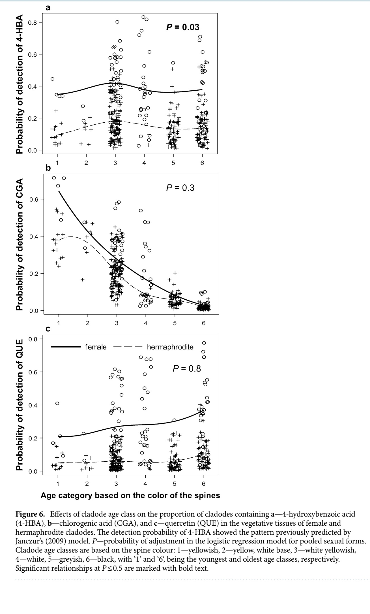

Impacto de las formas femeninas y hermafroditas de Opuntia robusta en la hipótesis de defensa en plantas
 La hipótesis de la defensa óptima predice que un aumento de las capacidades de defensivas, niveles más bajos de daño y menor inversión en biomasa vegetativa se producirán con más frecuencia en las formas sexuales con mayor producción de tejidos que demandan recursos y/o en las partes más jóvenes de la planta. Nuestro objetivo fue examinar los efectos de la forma sexual, el cladodio y la edad de la flor en la tasa de crecimiento, el daño por herbívoros y las concentraciones de ácido 4-hidroxibenzoico (4-HBA), ácido clorogénico y quercetina (QUE) en plantas de Opuntia robusta en el centro de México.
La hipótesis de la defensa óptima predice que un aumento de las capacidades de defensivas, niveles más bajos de daño y menor inversión en biomasa vegetativa se producirán con más frecuencia en las formas sexuales con mayor producción de tejidos que demandan recursos y/o en las partes más jóvenes de la planta. Nuestro objetivo fue examinar los efectos de la forma sexual, el cladodio y la edad de la flor en la tasa de crecimiento, el daño por herbívoros y las concentraciones de ácido 4-hidroxibenzoico (4-HBA), ácido clorogénico y quercetina (QUE) en plantas de Opuntia robusta en el centro de México.
Nuestros hallazgos demostraron que las flores hermafroditas mostraron un crecimiento más rápido y un menor daño que las flores femeninas. El efecto de las formas sexuales del cladodio sobre la aparición de 4-HBA y QUE fue consistente con las predicciones de la hipótesis de defensa óptima. Sin embargo, la presencia de ácido clorogénico no se vio afectada significativamente por las formas sexuales. Los cladodios viejos mostraron una mayor presencia de QUE y 4-HBA que los cladodios jóvenes, y los hermafroditas mostraron mayores concentraciones de 4-HBA que las femeninas. La asignación de recursos para la reproducción y la producción de metabolitos secundarios y el crecimiento fue mayor y menor, respectivamente, en las femeninas, en comparación con los hermafroditas, lo que indica la existencia de un trade-off entre la inversión en reproducción, el crecimiento y la producción de metabolitos secundarios. Las concentraciones de metabolitos secundarios en las plantas de O. robusta no se correlacionaron negativamente con el daño causado por los herbívoros.
Publicación completa en: